- Armatex
- Wyszukiwarka produktów
Lista do wyceny
Wybierz produkty do wyceny
Wybierz linię, dodaj potrzebne rozmiary i wyślij listę. Wycenę przygotujemy w 1 dzień roboczy. W ofercie ponad 3 400 indeksów Besco, Tectite i Kuterlite.
- Krok 1
- Wybierz linię
- Krok 2
- Dodaj rozmiary do listy
- Krok 3
- Wyślij · wycena w 1 dzień
Wybierz linię produktów
433 grup · Besco, Tectite, KuterliteOtwórz linię i wejdź w grupę, np. łuk lub trójnik. Na jej stronie dodasz rozmiary do listy.
Złączki zaprasowane Besco
O systemieCopper Gutpress, profil V · woda 28 grup · 257 indeksów
 Łuk 90° wz GP5001 · 8 rozm.
Łuk 90° wz GP5001 · 8 rozm. Łuk 90° ww GP5002 · 8 rozm.
Łuk 90° ww GP5002 · 8 rozm. Łuk 45° wz GP5040 · 8 rozm.
Łuk 45° wz GP5040 · 8 rozm. Łuk 45° ww GP5041 · 8 rozm.
Łuk 45° ww GP5041 · 8 rozm. Mufa GP5270 · 8 rozm.
Mufa GP5270 · 8 rozm. Mufa przesuwna GP5270S · 8 rozm.
Mufa przesuwna GP5270S · 8 rozm. Trójnik równoprzelotowy GP5130 · 8 rozm.
Trójnik równoprzelotowy GP5130 · 8 rozm. Trójnik redukcyjny GP5130 · 41 rozm.
Trójnik redukcyjny GP5130 · 41 rozm. Mufa redukcyjna ww GP5240 · 15 rozm.
Mufa redukcyjna ww GP5240 · 15 rozm. Redukcja wz GP5243 · 19 rozm.
Redukcja wz GP5243 · 19 rozm. Zaślepka GP5301 · 8 rozm.
Zaślepka GP5301 · 8 rozm. Mijanka ww GP5085 · 4 rozm.
Mijanka ww GP5085 · 4 rozm. Mijanka wz GP5086 · 4 rozm.
Mijanka wz GP5086 · 4 rozm. Kolano 90° z GW GP4090 · 11 rozm.
Kolano 90° z GW GP4090 · 11 rozm. Kolano 90° z GZ GP4092 · 10 rozm.
Kolano 90° z GZ GP4092 · 10 rozm. Trójnik z GW GP4130 · 9 rozm.
Trójnik z GW GP4130 · 9 rozm. Złączka z GZ GP4243 · 14 rozm.
Złączka z GZ GP4243 · 14 rozm. Złączka z GW GP4270 · 15 rozm.
Złączka z GW GP4270 · 15 rozm. Złączka z GZ GP4280 · 6 rozm.
Złączka z GZ GP4280 · 6 rozm. Złączka z GW GP4281 · 7 rozm.
Złączka z GW GP4281 · 7 rozm. Śrubunek z GZ (uszczelnienie płaskie) GP4331 · 8 rozm.
Śrubunek z GZ (uszczelnienie płaskie) GP4331 · 8 rozm. Śrubunek press × press (uszczelnienie płaskie) GP4330 · 5 rozm.
Śrubunek press × press (uszczelnienie płaskie) GP4330 · 5 rozm. Śrubunek z GZ (uszczelnienie płaskie) GP4330G · 8 rozm.
Śrubunek z GZ (uszczelnienie płaskie) GP4330G · 8 rozm. Półśrubunek z GW GP4355 · 7 rozm.
Półśrubunek z GW GP4355 · 7 rozm. Kolano ścienne z GW GP4471 · 3 rozm.
Kolano ścienne z GW GP4471 · 3 rozm. Zestaw montażowy wygięty z GW GP4976 · 1 rozm.
Zestaw montażowy wygięty z GW GP4976 · 1 rozm. Zestaw montażowy prosty z GW GP4977 · 2 rozm.
Zestaw montażowy prosty z GW GP4977 · 2 rozm. Rura miedziana BT · 4 rozm.
Rura miedziana BT · 4 rozm.Copper Gutpress, profil M · woda 28 grup · 294 indeksów
 Łuk 90° ww 6002 · 14 rozm.
Łuk 90° ww 6002 · 14 rozm. Łuk 90° wz 6001 · 11 rozm.
Łuk 90° wz 6001 · 11 rozm. Łuk 45° wz 6040 · 11 rozm.
Łuk 45° wz 6040 · 11 rozm. Łuk 45° ww 6041 · 11 rozm.
Łuk 45° ww 6041 · 11 rozm. Trójnik równoprzelotowy 6130 · 11 rozm.
Trójnik równoprzelotowy 6130 · 11 rozm. Trójnik redukcyjny 6130R · 44 rozm.
Trójnik redukcyjny 6130R · 44 rozm. Mufa redukcyjna ww 6240 · 18 rozm.
Mufa redukcyjna ww 6240 · 18 rozm. Redukcja wz 6243 · 28 rozm.
Redukcja wz 6243 · 28 rozm. Mufa 6270 · 11 rozm.
Mufa 6270 · 11 rozm. Mufa przesuwna 6271 · 8 rozm.
Mufa przesuwna 6271 · 8 rozm. Zaślepka 6301 · 10 rozm.
Zaślepka 6301 · 10 rozm. Półśrubunek kątowy 90° C6002G · 1 rozm.
Półśrubunek kątowy 90° C6002G · 1 rozm. Półśrubunek z GW C6359G · 1 rozm.
Półśrubunek z GW C6359G · 1 rozm. Mijanka ww 6085 · 4 rozm.
Mijanka ww 6085 · 4 rozm. Mijanka wz 6086 · 4 rozm.
Mijanka wz 6086 · 4 rozm. Kołnierz z końcówką press PN 16 6510 · 4 rozm.
Kołnierz z końcówką press PN 16 6510 · 4 rozm. Kolano 90° z GW 6090G · 5 rozm.
Kolano 90° z GW 6090G · 5 rozm. Kolano 90° z GZ 6092G · 5 rozm.
Kolano 90° z GZ 6092G · 5 rozm. Kolano ścienne z GW 6472G · 2 rozm.
Kolano ścienne z GW 6472G · 2 rozm. Złączka z GW 6270G · 16 rozm.
Złączka z GW 6270G · 16 rozm. Złączka z GZ 6243G · 20 rozm.
Złączka z GZ 6243G · 20 rozm. Trójnik z GW 6130G · 18 rozm.
Trójnik z GW 6130G · 18 rozm. Półśrubunek z GW 6359G · 6 rozm.
Półśrubunek z GW 6359G · 6 rozm. Śrubunek z GZ (uszczelnienie płaskie) 6331G · 6 rozm.
Śrubunek z GZ (uszczelnienie płaskie) 6331G · 6 rozm. Śrubunek z GW (uszczelnienie płaskie) 6330G · 6 rozm.
Śrubunek z GW (uszczelnienie płaskie) 6330G · 6 rozm. Śrubunek press × press (uszczelnienie płaskie) 6330 · 6 rozm.
Śrubunek press × press (uszczelnienie płaskie) 6330 · 6 rozm. Złączka z GW 6281 · 7 rozm.
Złączka z GW 6281 · 7 rozm. Złączka z GZ 6280 · 6 rozm.
Złączka z GZ 6280 · 6 rozm.Copper Gutpress, profil V · gaz 16 grup · 110 indeksów
 Łuk 90° wz GPG5001 · 5 rozm.
Łuk 90° wz GPG5001 · 5 rozm.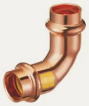
Łuk 90° ww GPG5002 · 5 rozm. Łuk 45° wz GPG5040 · 5 rozm.
Łuk 45° wz GPG5040 · 5 rozm. Łuk 45° ww GPG5041 · 5 rozm.
Łuk 45° ww GPG5041 · 5 rozm. Trójnik równoprzelotowy GPG5130 · 5 rozm.
Trójnik równoprzelotowy GPG5130 · 5 rozm.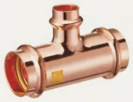
Trójnik redukcyjny GPG5130 · 12 rozm.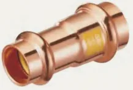
Mufa redukcyjna ww GPG5240 · 8 rozm. Redukcja wz GPG5243 · 8 rozm.
Redukcja wz GPG5243 · 8 rozm.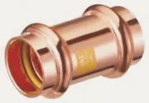
Mufa GPG5270 · 5 rozm. Zaślepka GPG5301 · 5 rozm.
Zaślepka GPG5301 · 5 rozm.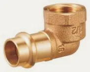
Kolano 90° z GW GPG4090 · 7 rozm.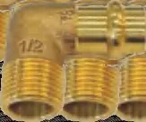
Kolano 90° z GZ GPG4092 · 6 rozm.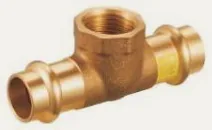
Trójnik z GW GPG4130 · 7 rozm. Kolano ścienne z GW GPG4471 · 3 rozm.
Kolano ścienne z GW GPG4471 · 3 rozm. Złączka z GZ GPG4243 · 12 rozm.
Złączka z GZ GPG4243 · 12 rozm.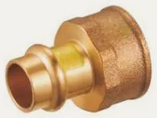
Złączka z GW GPG4270 · 12 rozm.Copper Gutpress, profil M · gaz 15 grup · 101 indeksów
 Łuk 90° wz 7001 · 5 rozm.
Łuk 90° wz 7001 · 5 rozm. Łuk 90° ww 7002 · 5 rozm.
Łuk 90° ww 7002 · 5 rozm. Łuk 45° wz 7040 · 5 rozm.
Łuk 45° wz 7040 · 5 rozm. Łuk 45° ww 7041 · 5 rozm.
Łuk 45° ww 7041 · 5 rozm. Trójnik równoprzelotowy 7130 · 5 rozm.
Trójnik równoprzelotowy 7130 · 5 rozm. Trójnik redukcyjny 7130R · 10 rozm.
Trójnik redukcyjny 7130R · 10 rozm. Redukcja wz 7243 · 7 rozm.
Redukcja wz 7243 · 7 rozm. Mufa 7270 · 5 rozm.
Mufa 7270 · 5 rozm. Zaślepka 7301 · 5 rozm.
Zaślepka 7301 · 5 rozm. Kolano 90° z GW 7090 · 5 rozm.
Kolano 90° z GW 7090 · 5 rozm. Kolano 90° z GZ 7092 · 5 rozm.
Kolano 90° z GZ 7092 · 5 rozm. Trójnik z GW 7130 · 10 rozm.
Trójnik z GW 7130 · 10 rozm. Złączka z GZ 7243 · 13 rozm.
Złączka z GZ 7243 · 13 rozm. Złączka z GW 7270 · 13 rozm.
Złączka z GW 7270 · 13 rozm. Kolano ścienne z GW 7472 · 3 rozm.
Kolano ścienne z GW 7472 · 3 rozm.Gutpress Steel, profil M 22 grup · 256 indeksów
 Mufa 2270 · 12 rozm.
Mufa 2270 · 12 rozm. Złączka z GZ 2243G · 18 rozm.
Złączka z GZ 2243G · 18 rozm. Złączka z GW 2270G · 13 rozm.
Złączka z GW 2270G · 13 rozm. Mufa redukcyjna ww 2240 · 8 rozm.
Mufa redukcyjna ww 2240 · 8 rozm. Mufa przesuwna 2271 · 11 rozm.
Mufa przesuwna 2271 · 11 rozm. Półśrubunek z GW 2359G · 5 rozm.
Półśrubunek z GW 2359G · 5 rozm. Śrubunek z GZ 2331G · 7 rozm.
Śrubunek z GZ 2331G · 7 rozm. Łuk 90° ww 2002 · 12 rozm.
Łuk 90° ww 2002 · 12 rozm. Łuk 90° wz 2001 · 12 rozm.
Łuk 90° wz 2001 · 12 rozm. Łuk 45° ww 2041 · 12 rozm.
Łuk 45° ww 2041 · 12 rozm. Łuk 45° wz 2040 · 12 rozm.
Łuk 45° wz 2040 · 12 rozm. Łuk 90° z GZ 2001G · 8 rozm.
Łuk 90° z GZ 2001G · 8 rozm. Łuk 90° z GW 2002G · 5 rozm.
Łuk 90° z GW 2002G · 5 rozm. Zaślepka 2301 · 8 rozm.
Zaślepka 2301 · 8 rozm. Redukcja wz 2243 · 26 rozm.
Redukcja wz 2243 · 26 rozm. Trójnik równoprzelotowy 2130 · 12 rozm.
Trójnik równoprzelotowy 2130 · 12 rozm. Trójnik redukcyjny 2130R · 42 rozm.
Trójnik redukcyjny 2130R · 42 rozm. Trójnik z GW 2130G · 17 rozm.
Trójnik z GW 2130G · 17 rozm. Kolano 90° z GZ 2090G · 5 rozm.
Kolano 90° z GZ 2090G · 5 rozm. Złączka z GZ 2280 · 3 rozm.
Złączka z GZ 2280 · 3 rozm. Złączka z GW 2281 · 4 rozm.
Złączka z GW 2281 · 4 rozm. Kołnierz z końcówką press PN 16 2510 · 4 rozm.
Kołnierz z końcówką press PN 16 2510 · 4 rozm.Stal nierdzewna INOX 316L press, profil M 23 grup · 253 indeksów
 Mufa 12000 · 12 rozm.
Mufa 12000 · 12 rozm. Mufa przesuwna 12040 · 11 rozm.
Mufa przesuwna 12040 · 11 rozm. Łuk 90° ww 12200 · 12 rozm.
Łuk 90° ww 12200 · 12 rozm. Łuk 90° wz 12210 · 11 rozm.
Łuk 90° wz 12210 · 11 rozm. Łuk 45° ww 12230 · 12 rozm.
Łuk 45° ww 12230 · 12 rozm. Łuk 45° wz 12240 · 11 rozm.
Łuk 45° wz 12240 · 11 rozm. Redukcja wz 12430 · 29 rozm.
Redukcja wz 12430 · 29 rozm. Trójnik równoprzelotowy 12100 · 12 rozm.
Trójnik równoprzelotowy 12100 · 12 rozm. Trójnik redukcyjny 12110 · 32 rozm.
Trójnik redukcyjny 12110 · 32 rozm. Zaślepka 12410 · 11 rozm.
Zaślepka 12410 · 11 rozm. Łuk 90° zz 12350 · 7 rozm.
Łuk 90° zz 12350 · 7 rozm. Mijanka zz 12360 · 4 rozm.
Mijanka zz 12360 · 4 rozm. Kolano 90° z GW 12320 · 5 rozm.
Kolano 90° z GW 12320 · 5 rozm. Kolano 90° z GZ 12310 · 7 rozm.
Kolano 90° z GZ 12310 · 7 rozm. Kolano ścienne z GW 12340 · 3 rozm.
Kolano ścienne z GW 12340 · 3 rozm. Złączka z GW 12020 · 13 rozm.
Złączka z GW 12020 · 13 rozm. Złączka z GZ 12010 · 19 rozm.
Złączka z GZ 12010 · 19 rozm. Trójnik z GW 12120 · 16 rozm.
Trójnik z GW 12120 · 16 rozm. Półśrubunek z GW 12070 · 6 rozm.
Półśrubunek z GW 12070 · 6 rozm. Śrubunek z GZ 12080 · 7 rozm.
Śrubunek z GZ 12080 · 7 rozm. Złączka z GZ 12450 · 2 rozm.
Złączka z GZ 12450 · 2 rozm. Złączka z GW 12460 · 3 rozm.
Złączka z GW 12460 · 3 rozm. Kołnierz z końcówką press PN 16 12400 · 8 rozm.
Kołnierz z końcówką press PN 16 12400 · 8 rozm.Stal nierdzewna INOX 304 press, profil M 25 grup · 287 indeksów
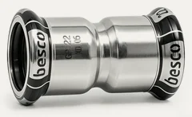
Mufa 3270 · 11 rozm.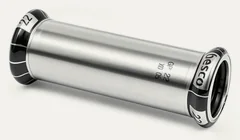
Mufa przesuwna 3271 · 11 rozm.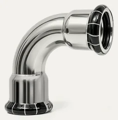
Łuk 90° ww 3002 · 11 rozm.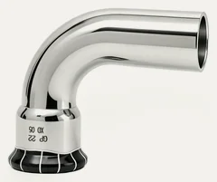
Łuk 90° wz 3001 · 11 rozm.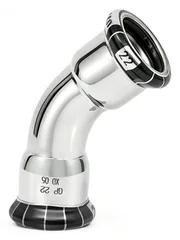
Łuk 45° ww 3041 · 11 rozm.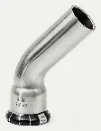
Łuk 45° wz 3040 · 11 rozm.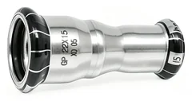
Mufa redukcyjna ww 3240 · 6 rozm.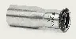
Redukcja wz 3243 · 30 rozm. Trójnik równoprzelotowy 3130 · 11 rozm.
Trójnik równoprzelotowy 3130 · 11 rozm.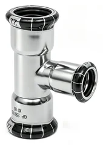
Trójnik redukcyjny 3130R · 37 rozm.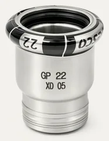
Zaślepka 3301 · 11 rozm.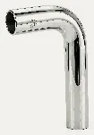
Łuk 90° zz 3030 · 7 rozm.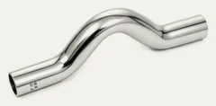
Mijanka zz 3085 · 4 rozm.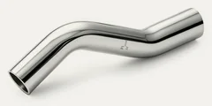
Mijanka wz 3086 · 4 rozm.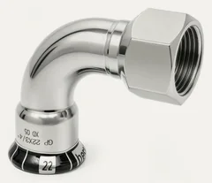
Kolano 90° z GW 3002G · 6 rozm.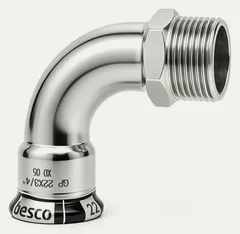
Kolano 90° z GZ 3001G · 7 rozm.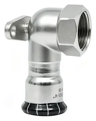
Kolano ścienne z GW 3472G · 4 rozm.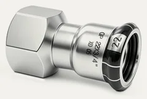
Złączka z GW 3270G · 17 rozm.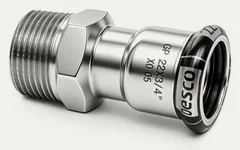
Złączka z GZ 3243G · 22 rozm.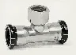
Trójnik z GW 3130G · 16 rozm.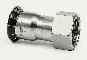
Półśrubunek z GW 3358G · 11 rozm.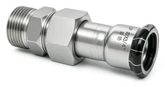
Śrubunek z GZ 3331G · 7 rozm.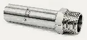
Złączka z GZ 3280 · 6 rozm.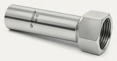
Złączka z GW 3281 · 7 rozm.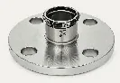
Kołnierz z końcówką press PN 16 3510 · 8 rozm.


Złączki na wcisk Pegler Yorkshire
O systemieTectite Classic 42 grup · 248 indeksów
 Złączka prosta T1 · 8 rozm.
Złączka prosta T1 · 8 rozm. Złączka redukcyjna T1R · 10 rozm.
Złączka redukcyjna T1R · 10 rozm. Złączka ślizgowa T1S · 5 rozm.
Złączka ślizgowa T1S · 5 rozm. Redukcja GW T2 · 15 rozm.
Redukcja GW T2 · 15 rozm. Złączka GZ T3T · 13 rozm.
Złączka GZ T3T · 13 rozm. Redukcja GZ T3P · 11 rozm.
Redukcja GZ T3P · 11 rozm. Redukcja GZ T5 · 3 rozm.
Redukcja GZ T5 · 3 rozm. Redukcja T6 · 10 rozm.
Redukcja T6 · 10 rozm. Kolano T12 · 8 rozm.
Kolano T12 · 8 rozm. Kolano T12S · 7 rozm.
Kolano T12S · 7 rozm. Kolano T12SNP · 3 rozm.
Kolano T12SNP · 3 rozm. Kolano GZ T13 · 11 rozm.
Kolano GZ T13 · 11 rozm. Kolano GW T14 · 11 rozm.
Kolano GW T14 · 11 rozm. Kolano GW z łapami TT15 · 7 rozm.
Kolano GW z łapami TT15 · 7 rozm. Kolano 45 st. T21 · 6 rozm.
Kolano 45 st. T21 · 6 rozm. Kolano 45 st. T21S · 6 rozm.
Kolano 45 st. T21S · 6 rozm. Trójnik T24 · 8 rozm.
Trójnik T24 · 8 rozm. Trójnik redukcyjny T25 · 12 rozm.
Trójnik redukcyjny T25 · 12 rozm. Trójnik redukcyjny T26 · 6 rozm.
Trójnik redukcyjny T26 · 6 rozm. Trójnik redukcyjny T27 · 6 rozm.
Trójnik redukcyjny T27 · 6 rozm. Trójnik redukcyjny GW T30 · 5 rozm.
Trójnik redukcyjny GW T30 · 5 rozm. Kapa T61 · 8 rozm.
Kapa T61 · 8 rozm. Kapa T61RV · 6 rozm.
Kapa T61RV · 6 rozm. Redukcja GW ruchoma T62 · 4 rozm.
Redukcja GW ruchoma T62 · 4 rozm. Złączka GW ruchoma T62S · 3 rozm.
Złączka GW ruchoma T62S · 3 rozm. Kolano GW ruchome T63 · 4 rozm.
Kolano GW ruchome T63 · 4 rozm. Złączka GW TX68S · 1 rozm.
Złączka GW TX68S · 1 rozm. Adapter śrubunkowy T68FF · 4 rozm.
Adapter śrubunkowy T68FF · 4 rozm. Złączka prosta (chrom) T1CP · 3 rozm.
Złączka prosta (chrom) T1CP · 3 rozm. Złączka prosta (chrom) T1RCP · 3 rozm.
Złączka prosta (chrom) T1RCP · 3 rozm. Złączka GW (chrom) T2CP · 6 rozm.
Złączka GW (chrom) T2CP · 6 rozm. Złączka GW (chrom) T3TCP · 6 rozm.
Złączka GW (chrom) T3TCP · 6 rozm. Redukcja (chrom) T6CP · 3 rozm.
Redukcja (chrom) T6CP · 3 rozm. Kolano (chrom) T12 · 3 rozm.
Kolano (chrom) T12 · 3 rozm. Kolano GZ (chrom) T13CP · 5 rozm.
Kolano GZ (chrom) T13CP · 5 rozm. Kolano GW (chrom) T14CP · 5 rozm.
Kolano GW (chrom) T14CP · 5 rozm. Kolano GW z łapami (chrom) T15CP · 3 rozm.
Kolano GW z łapami (chrom) T15CP · 3 rozm. Trójnik (chrom) T24CP · 3 rozm.
Trójnik (chrom) T24CP · 3 rozm. Trójnik redukcyjny (chrom) T25CP · 3 rozm.
Trójnik redukcyjny (chrom) T25CP · 3 rozm. Trójnik redukcyjny (chrom) T27CP · 1 rozm.
Trójnik redukcyjny (chrom) T27CP · 1 rozm. Trójnik redukcyjny (chrom) T30CP · 1 rozm.
Trójnik redukcyjny (chrom) T30CP · 1 rozm. Kapa (chrom) T61CP · 2 rozm.
Kapa (chrom) T61CP · 2 rozm.Tectite Pro 22 grup · 115 indeksów
 Dwuzłączka TX1 · 6 rozm.
Dwuzłączka TX1 · 6 rozm. Dwuzłączka ślizgowa TX1 · 6 rozm.
Dwuzłączka ślizgowa TX1 · 6 rozm. Złączka GW TX2 · 7 rozm.
Złączka GW TX2 · 7 rozm. Złączka GZ TX3 · 7 rozm.
Złączka GZ TX3 · 7 rozm. Złączka GZ TX3P · 5 rozm.
Złączka GZ TX3P · 5 rozm. Złączka redukcyjna nypel TX6 · 15 rozm.
Złączka redukcyjna nypel TX6 · 15 rozm. Kolano 90 st. TX12 · 6 rozm.
Kolano 90 st. TX12 · 6 rozm. Kolano 90 st. nypel TX12S · 3 rozm.
Kolano 90 st. nypel TX12S · 3 rozm. Kolano 90 st. GZ TX13 · 3 rozm.
Kolano 90 st. GZ TX13 · 3 rozm. Kolano 90 st. GW TX14 · 3 rozm.
Kolano 90 st. GW TX14 · 3 rozm. Kolano 90 st. GW z łapami TX15 · 1 rozm.
Kolano 90 st. GW z łapami TX15 · 1 rozm. Kolano 45 st. TX21 · 6 rozm.
Kolano 45 st. TX21 · 6 rozm. Kolano 45 st. nypel TX21S · 6 rozm.
Kolano 45 st. nypel TX21S · 6 rozm. Trójnik równoprzelotowy TX24 · 6 rozm.
Trójnik równoprzelotowy TX24 · 6 rozm. Trójnik redukcyjny TX25 · 13 rozm.
Trójnik redukcyjny TX25 · 13 rozm. Trójnik redukcyjny TX26 · 3 rozm.
Trójnik redukcyjny TX26 · 3 rozm. Trójnik redukcyjny TX27 · 2 rozm.
Trójnik redukcyjny TX27 · 2 rozm. Trójnik redukcyjny GW TX30 · 4 rozm.
Trójnik redukcyjny GW TX30 · 4 rozm. Kapa TX61 · 3 rozm.
Kapa TX61 · 3 rozm. Kapa z odpowietrznikiem TX61RV · 3 rozm.
Kapa z odpowietrznikiem TX61RV · 3 rozm. Złączka GW TX62 · 5 rozm.
Złączka GW TX62 · 5 rozm. Kolano GW ruchome TX63 · 2 rozm.
Kolano GW ruchome TX63 · 2 rozm.Tectite 316 17 grup · 114 indeksów
 Dwuzłączka TS1 · 7 rozm.
Dwuzłączka TS1 · 7 rozm. Złączka ślizgowa TS1S · 4 rozm.
Złączka ślizgowa TS1S · 4 rozm. Złączka GW TS2 · 11 rozm.
Złączka GW TS2 · 11 rozm. Złączka GW TS3 · 10 rozm.
Złączka GW TS3 · 10 rozm. Redukcja nypel TS6 · 13 rozm.
Redukcja nypel TS6 · 13 rozm. Kolano 90 st. TS12 · 7 rozm.
Kolano 90 st. TS12 · 7 rozm. Kolano 90 st. nypel TS12S · 4 rozm.
Kolano 90 st. nypel TS12S · 4 rozm. Kolanko 90 st. GZ TS13 · 4 rozm.
Kolanko 90 st. GZ TS13 · 4 rozm. Kolanko 90 st. GW TS14 · 5 rozm.
Kolanko 90 st. GW TS14 · 5 rozm. Kolano 90 st. GZ z łapami TS15 · 3 rozm.
Kolano 90 st. GZ z łapami TS15 · 3 rozm. Kolano 45 st. TS21 · 4 rozm.
Kolano 45 st. TS21 · 4 rozm. Kolano 45 st. nypel TS21S · 4 rozm.
Kolano 45 st. nypel TS21S · 4 rozm. Trójnik równoprzelotowy TS24 · 7 rozm.
Trójnik równoprzelotowy TS24 · 7 rozm. Trójnik redukcyjny TS25 · 15 rozm.
Trójnik redukcyjny TS25 · 15 rozm. Trójnik redukcyjny GW TS30 · 7 rozm.
Trójnik redukcyjny GW TS30 · 7 rozm. Kapa TS61 · 7 rozm.
Kapa TS61 · 7 rozm. Złączka GW ruchoma TS62 · 2 rozm.
Złączka GW ruchoma TS62 · 2 rozm.Zawory na wcisk Pegler 5 grup · 19 indeksów

Akcesoria i narzędzia Tec-Tools 8 grup · 29 indeksów


Złączki skręcane Pegler Yorkshire
O systemieKuterlite K600 51 grup · 148 indeksów
 Złączka prosta K610 · 12 rozm.
Złączka prosta K610 · 12 rozm. Złączka z odpowietrznikiem K610AC · 2 rozm.
Złączka z odpowietrznikiem K610AC · 2 rozm. Złączka naprawcza K610BP · 1 rozm.
Złączka naprawcza K610BP · 1 rozm. Złączka przejściowa calowa × metryczna K610IM · 1 rozm.
Złączka przejściowa calowa × metryczna K610IM · 1 rozm. Złączka prosta PE × miedź K1710KP · 1 rozm.
Złączka prosta PE × miedź K1710KP · 1 rozm. Trójnik do grzałki K604 · 1 rozm.
Trójnik do grzałki K604 · 1 rozm. Złączka z GZ (gwint stożkowy) K611 · 15 rozm.
Złączka z GZ (gwint stożkowy) K611 · 15 rozm. Złączka z GZ (gwint walcowy) K611P · 4 rozm.
Złączka z GZ (gwint walcowy) K611P · 4 rozm. Złączka zbiornikowa długa z GZ (gwint walcowy) K611LB · 2 rozm.
Złączka zbiornikowa długa z GZ (gwint walcowy) K611LB · 2 rozm. Złączka zbiornikowa długa z GZ K611LBPC · 1 rozm.
Złączka zbiornikowa długa z GZ K611LBPC · 1 rozm. Złączka z GW K612 · 8 rozm.
Złączka z GW K612 · 8 rozm. Złączka kranowa z GW K612ST · 3 rozm.
Złączka kranowa z GW K612ST · 3 rozm. Złączka do zasobnika z nakrętką K612TN · 1 rozm.
Złączka do zasobnika z nakrętką K612TN · 1 rozm. Kolano K615 · 10 rozm.
Kolano K615 · 10 rozm. Kolano z odpowietrznikiem K615AC · 2 rozm.
Kolano z odpowietrznikiem K615AC · 2 rozm. Łuk K615S · 2 rozm.
Łuk K615S · 2 rozm. Kolano z GZ (gwint stożkowy) K616 · 5 rozm.
Kolano z GZ (gwint stożkowy) K616 · 5 rozm. Kolano z GZ (gwint walcowy) K616P · 2 rozm.
Kolano z GZ (gwint walcowy) K616P · 2 rozm. Kolano długie z GZ (gwint walcowy) K616LB · 1 rozm.
Kolano długie z GZ (gwint walcowy) K616LB · 1 rozm. Kolano z GW K617 · 5 rozm.
Kolano z GW K617 · 5 rozm. Kolano ścienne z GW K617W · 3 rozm.
Kolano ścienne z GW K617W · 3 rozm. Trójnik równoprzelotowy K618 · 6 rozm.
Trójnik równoprzelotowy K618 · 6 rozm. Trójnik z redukcją odejścia K618B · 1 rozm.
Trójnik z redukcją odejścia K618B · 1 rozm. Trójnik redukcyjny (jeden koniec) K618E · 1 rozm.
Trójnik redukcyjny (jeden koniec) K618E · 1 rozm. Trójnik redukcyjny (koniec i odejście) K618EB · 2 rozm.
Trójnik redukcyjny (koniec i odejście) K618EB · 2 rozm. Czwórnik K623 · 2 rozm.
Czwórnik K623 · 2 rozm. Przyłącze kranowe proste z nakrętką KS626 · 2 rozm.
Przyłącze kranowe proste z nakrętką KS626 · 2 rozm. Przyłącze kranowe kątowe z nakrętką K627 · 1 rozm.
Przyłącze kranowe kątowe z nakrętką K627 · 1 rozm. Trójnik ścienny z GW K630W · 1 rozm.
Trójnik ścienny z GW K630W · 1 rozm. Zestaw redukcyjny K648 · 4 rozm.
Zestaw redukcyjny K648 · 4 rozm. Przyłącze zbiornikowe z kołnierzem KS650 · 3 rozm.
Przyłącze zbiornikowe z kołnierzem KS650 · 3 rozm. Zaślepka K651 · 6 rozm.
Zaślepka K651 · 6 rozm. Trójnik łukowy K657 · 2 rozm.
Trójnik łukowy K657 · 2 rozm. Wąż przyłączeniowy z GW FF25 · 1 rozm.
Wąż przyłączeniowy z GW FF25 · 1 rozm. Wąż przyłączeniowy kranowy prosty FF26 · 2 rozm.
Wąż przyłączeniowy kranowy prosty FF26 · 2 rozm. Wąż przyłączeniowy kranowy kątowy FF27 · 1 rozm.
Wąż przyłączeniowy kranowy kątowy FF27 · 1 rozm. Złączka prosta (chrom) K610CP · 3 rozm.
Złączka prosta (chrom) K610CP · 3 rozm. Złączka z GZ (gwint stożkowy) (chrom) K611CP · 3 rozm.
Złączka z GZ (gwint stożkowy) (chrom) K611CP · 3 rozm. Złączka z GZ (gwint walcowy) (chrom) K611PCP · 1 rozm.
Złączka z GZ (gwint walcowy) (chrom) K611PCP · 1 rozm. Złączka z GW (chrom) K612CP · 3 rozm.
Złączka z GW (chrom) K612CP · 3 rozm. Kolano (chrom) K615CP · 4 rozm.
Kolano (chrom) K615CP · 4 rozm. Kolano z GZ (gwint stożkowy) (chrom) K616CP · 2 rozm.
Kolano z GZ (gwint stożkowy) (chrom) K616CP · 2 rozm. Kolano z GZ (gwint walcowy) (chrom) K616PCP · 1 rozm.
Kolano z GZ (gwint walcowy) (chrom) K616PCP · 1 rozm. Kolano z GW (chrom) K617CP · 2 rozm.
Kolano z GW (chrom) K617CP · 2 rozm. Kolano ścienne z GW (chrom) K617WCP · 1 rozm.
Kolano ścienne z GW (chrom) K617WCP · 1 rozm. Trójnik równoprzelotowy (chrom) K618CP · 3 rozm.
Trójnik równoprzelotowy (chrom) K618CP · 3 rozm. Trójnik z redukcją odejścia (chrom) K618BCP · 1 rozm.
Trójnik z redukcją odejścia (chrom) K618BCP · 1 rozm. Trójnik redukcyjny (koniec i odejście) (chrom) K618EBCP · 1 rozm.
Trójnik redukcyjny (koniec i odejście) (chrom) K618EBCP · 1 rozm. Przyłącze kranowe proste z nakrętką (chrom) K626CP · 2 rozm.
Przyłącze kranowe proste z nakrętką (chrom) K626CP · 2 rozm. Przyłącze kranowe kątowe z nakrętką (chrom) K627CP · 1 rozm.
Przyłącze kranowe kątowe z nakrętką (chrom) K627CP · 1 rozm. Zaślepka (chrom) K651CP · 3 rozm.
Zaślepka (chrom) K651CP · 3 rozm.Kuterlite K900 Pro 37 grup · 184 indeksów
 Złączka prosta K910X · 16 rozm.
Złączka prosta K910X · 16 rozm. Złączka z GZ (gwint stożkowy) K911X · 16 rozm.
Złączka z GZ (gwint stożkowy) K911X · 16 rozm. Złączka zbiornikowa długa z GZ (gwint walcowy) K911LBX · 2 rozm.
Złączka zbiornikowa długa z GZ (gwint walcowy) K911LBX · 2 rozm. Złączka zbiornikowa z GZ (gwint walcowy) K911TCX · 6 rozm.
Złączka zbiornikowa z GZ (gwint walcowy) K911TCX · 6 rozm. Złączka z GW K912X · 14 rozm.
Złączka z GW K912X · 14 rozm. Kolano K915X · 8 rozm.
Kolano K915X · 8 rozm. Kolano z GZ (gwint stożkowy) K916X · 11 rozm.
Kolano z GZ (gwint stożkowy) K916X · 11 rozm. Kolano z GZ (gwint walcowy) K916PX · 4 rozm.
Kolano z GZ (gwint walcowy) K916PX · 4 rozm. Kolano długie z GZ (gwint walcowy) K916LBX · 1 rozm.
Kolano długie z GZ (gwint walcowy) K916LBX · 1 rozm. Kolano z GW K917X · 11 rozm.
Kolano z GW K917X · 11 rozm. Kolano ścienne z GW K917WX · 2 rozm.
Kolano ścienne z GW K917WX · 2 rozm. Trójnik równoprzelotowy K918X · 9 rozm.
Trójnik równoprzelotowy K918X · 9 rozm. Trójnik z redukcją odejścia K918BX · 9 rozm.
Trójnik z redukcją odejścia K918BX · 9 rozm. Trójnik redukcyjny (jeden koniec) K918EX · 4 rozm.
Trójnik redukcyjny (jeden koniec) K918EX · 4 rozm. Trójnik redukcyjny (koniec i odejście) K918EBX · 2 rozm.
Trójnik redukcyjny (koniec i odejście) K918EBX · 2 rozm. Trójnik redukcyjny (oba końce) K918EEX · 1 rozm.
Trójnik redukcyjny (oba końce) K918EEX · 1 rozm. Trójnik z GZ na końcu K920X · 1 rozm.
Trójnik z GZ na końcu K920X · 1 rozm. Trójnik z odejściem GZ K920HX · 1 rozm.
Trójnik z odejściem GZ K920HX · 1 rozm. Czwórnik K923X · 1 rozm.
Czwórnik K923X · 1 rozm. Przyłącze kranowe proste z nakrętką KS926X · 3 rozm.
Przyłącze kranowe proste z nakrętką KS926X · 3 rozm. Przyłącze kranowe kątowe z nakrętką K927X · 2 rozm.
Przyłącze kranowe kątowe z nakrętką K927X · 2 rozm. Trójnik z odejściem GW K930X · 5 rozm.
Trójnik z odejściem GW K930X · 5 rozm. Trójnik z GW na końcu K930EX · 3 rozm.
Trójnik z GW na końcu K930EX · 3 rozm. Adapter z GW K941X · 1 rozm.
Adapter z GW K941X · 1 rozm. Redukcja jednoczęściowa K947X · 10 rozm.
Redukcja jednoczęściowa K947X · 10 rozm. Zestaw redukcyjny K948X · 5 rozm.
Zestaw redukcyjny K948X · 5 rozm. Przyłącze zbiornikowe z kołnierzem KS950X · 3 rozm.
Przyłącze zbiornikowe z kołnierzem KS950X · 3 rozm. Zaślepka K951X · 7 rozm.
Zaślepka K951X · 7 rozm. Mijanka K953X · 1 rozm.
Mijanka K953X · 1 rozm. Korek zaślepiający K972X · 5 rozm.
Korek zaślepiający K972X · 5 rozm. Adapter typ A × typ B do miedzi miękkiej K900 · 2 rozm.
Adapter typ A × typ B do miedzi miękkiej K900 · 2 rozm. Kolano (chrom) K915XCP · 2 rozm.
Kolano (chrom) K915XCP · 2 rozm. Kolano ścienne z GW (chrom) K917WXCP · 2 rozm.
Kolano ścienne z GW (chrom) K917WXCP · 2 rozm. Trójnik równoprzelotowy (chrom) K918XCP · 1 rozm.
Trójnik równoprzelotowy (chrom) K918XCP · 1 rozm. Trójnik z redukcją odejścia (chrom) K918BXCP · 2 rozm.
Trójnik z redukcją odejścia (chrom) K918BXCP · 2 rozm. Redukcja jednoczęściowa (chrom) K947XCP · 1 rozm.
Redukcja jednoczęściowa (chrom) K947XCP · 1 rozm.Kuterlite K700 23 grup · 67 indeksów
 Adapter PE × miedź do lutowania K701 · 2 rozm.
Adapter PE × miedź do lutowania K701 · 2 rozm. Złączka prosta PE × PE K710 · 5 rozm.
Złączka prosta PE × PE K710 · 5 rozm. Adapter PE metryczny × calowy K710IM · 3 rozm.
Adapter PE metryczny × calowy K710IM · 3 rozm. Złączka prosta PE × miedź K710KP · 3 rozm.
Złączka prosta PE × miedź K710KP · 3 rozm. Złączka z GZ (gwint stożkowy) PE K711 · 3 rozm.
Złączka z GZ (gwint stożkowy) PE K711 · 3 rozm. Złączka długa z GZ (gwint walcowy) PE K711LB · 1 rozm.
Złączka długa z GZ (gwint walcowy) PE K711LB · 1 rozm. Złączka z GW PE K712 · 3 rozm.
Złączka z GW PE K712 · 3 rozm. Kolano PE K715 · 3 rozm.
Kolano PE K715 · 3 rozm. Kolano z GZ (gwint stożkowy) PE K716 · 3 rozm.
Kolano z GZ (gwint stożkowy) PE K716 · 3 rozm. Kolano z GW PE K717 · 3 rozm.
Kolano z GW PE K717 · 3 rozm. Kolano ścienne z GW PE K717W · 2 rozm.
Kolano ścienne z GW PE K717W · 2 rozm. Trójnik równoprzelotowy PE K718 · 3 rozm.
Trójnik równoprzelotowy PE K718 · 3 rozm. Trójnik z redukcją odejścia PE K718B · 2 rozm.
Trójnik z redukcją odejścia PE K718B · 2 rozm. Trójnik z odejściem GW PE K730 · 4 rozm.
Trójnik z odejściem GW PE K730 · 4 rozm. Korek zaślepiający K742 · 1 rozm.
Korek zaślepiający K742 · 1 rozm. Adapter PE z końcówką wtykową K743 · 1 rozm.
Adapter PE z końcówką wtykową K743 · 1 rozm. Zestaw redukcyjny K748R · 3 rozm.
Zestaw redukcyjny K748R · 3 rozm. Zaślepka PE K751 · 2 rozm.
Zaślepka PE K751 · 2 rozm. Nakrętka zaciskowa K778A · 4 rozm.
Nakrętka zaciskowa K778A · 4 rozm. Pierścień zaciskowy K778B · 4 rozm.
Pierścień zaciskowy K778B · 4 rozm. Tulejka wzmacniająca K766M · 5 rozm.
Tulejka wzmacniająca K766M · 5 rozm. Korek zaślepiający K972 · 4 rozm.
Korek zaślepiający K972 · 4 rozm. Tulejka wzmacniająca K1766C · 3 rozm.
Tulejka wzmacniająca K1766C · 3 rozm.Zawory Kuterlite 13 grup · 30 indeksów
 Zawór odcinający K551 · 1 rozm.
Zawór odcinający K551 · 1 rozm. Zawór odcinający z brązu PE × miedź PL59A · 1 rozm.
Zawór odcinający z brązu PE × miedź PL59A · 1 rozm. Zawór do urządzeń, prosty K637 · 1 rozm.
Zawór do urządzeń, prosty K637 · 1 rozm. Zawór do urządzeń, kątowy K638 · 1 rozm.
Zawór do urządzeń, kątowy K638 · 1 rozm. Zawór do urządzeń, trójnikowy K639 · 1 rozm.
Zawór do urządzeń, trójnikowy K639 · 1 rozm. Zawór zwrotny pojedynczy K424 · 3 rozm.
Zawór zwrotny pojedynczy K424 · 3 rozm. Zawór zwrotny pojedynczy z GW K426 · 6 rozm.
Zawór zwrotny pojedynczy z GW K426 · 6 rozm. Zawór zwrotny podwójny K4424 · 3 rozm.
Zawór zwrotny podwójny K4424 · 3 rozm. Zawór zwrotny podwójny K4426 · 6 rozm.
Zawór zwrotny podwójny K4426 · 6 rozm. Zawór kulowy odcinający K480 · 2 rozm.
Zawór kulowy odcinający K480 · 2 rozm. Zawór kulowy ćwierćobrotowy z dźwignią PB300 · 3 rozm.
Zawór kulowy ćwierćobrotowy z dźwignią PB300 · 3 rozm. Zawór kulowy pełnoprzelotowy chromowany PB300T · 1 rozm.
Zawór kulowy pełnoprzelotowy chromowany PB300T · 1 rozm. Zestaw wodomierzowy PB360WMK · 1 rozm.
Zestaw wodomierzowy PB360WMK · 1 rozm.Akcesoria Kuterlite 6 grup · 32 indeksów
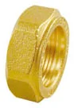
Nakrętka zaciskowa K678A · 11 rozm.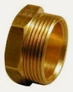
Tuleja gwintowana sześciokątna K964 · 1 rozm.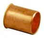
Tulejka wzmacniająca K690 · 3 rozm.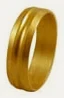
Pierścień zaciskowy K978B · 11 rozm.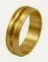
Pierścień zaciskowy do rur calowych K978C · 3 rozm.Tulejka wzmacniająca K1766C · 3 rozm.Złączki lutowane Besco
O systemieMiedź lutowana EN 1254 26 grup · 513 indeksów
 Łuk 90° wz 5001 · 18 rozm.
Łuk 90° wz 5001 · 18 rozm. Łuk 90° ww 5002 · 18 rozm.
Łuk 90° ww 5002 · 18 rozm. Łuk 45° wz 5040 · 17 rozm.
Łuk 45° wz 5040 · 17 rozm. Łuk 45° ww 5041 · 18 rozm.
Łuk 45° ww 5041 · 18 rozm. Kolano 90° ww 5090 · 18 rozm.
Kolano 90° ww 5090 · 18 rozm. Kolano 90° wz 5092 · 18 rozm.
Kolano 90° wz 5092 · 18 rozm. Trójnik równoprzelotowy 5130 · 18 rozm.
Trójnik równoprzelotowy 5130 · 18 rozm. Trójnik redukcyjny 5130 · 113 rozm.
Trójnik redukcyjny 5130 · 113 rozm. Mufa redukcyjna ww 5240 · 54 rozm.
Mufa redukcyjna ww 5240 · 54 rozm. Redukcja wz 5243 · 62 rozm.
Redukcja wz 5243 · 62 rozm. Mufa 5270 · 18 rozm.
Mufa 5270 · 18 rozm. Zaślepka 5301 · 15 rozm.
Zaślepka 5301 · 15 rozm. Łuk 180° powrotny 5060 · 10 rozm.
Łuk 180° powrotny 5060 · 10 rozm. Mijanka ww 5085 · 6 rozm.
Mijanka ww 5085 · 6 rozm. Mijanka wz 5086 · 6 rozm.
Mijanka wz 5086 · 6 rozm. Półśrubunek kątowy 90° 5002G · 6 rozm.
Półśrubunek kątowy 90° 5002G · 6 rozm. Półśrubunek z GW 5359G · 4 rozm.
Półśrubunek z GW 5359G · 4 rozm. Kolano 90° z GW 4090 · 12 rozm.
Kolano 90° z GW 4090 · 12 rozm. Kolano 90° z GZ 4092 · 10 rozm.
Kolano 90° z GZ 4092 · 10 rozm. Śrubunek kątowy 90° z GZ 4098 · 4 rozm.
Śrubunek kątowy 90° z GZ 4098 · 4 rozm. Kolano ścienne z GW 4472 · 8 rozm.
Kolano ścienne z GW 4472 · 8 rozm. Trójnik z GW 4130 · 10 rozm.
Trójnik z GW 4130 · 10 rozm. Złączka z GW 4270 · 19 rozm.
Złączka z GW 4270 · 19 rozm. Złączka z GZ 4243 · 23 rozm.
Złączka z GZ 4243 · 23 rozm. Śrubunek z GW (uszczelnienie stożkowe) 4330G · 4 rozm.
Śrubunek z GW (uszczelnienie stożkowe) 4330G · 4 rozm. Śrubunek z GZ 4331 · 4 rozm.
Śrubunek z GZ 4331 · 4 rozm.Miedź calowa ANSI B16.22 · seria K 13 grup · 315 indeksów
 Łuk 90° wz K5001 · 15 rozm.
Łuk 90° wz K5001 · 15 rozm. Łuk 90° ww K5002 · 16 rozm.
Łuk 90° ww K5002 · 16 rozm. Łuk 45° wz K5040 · 13 rozm.
Łuk 45° wz K5040 · 13 rozm. Łuk 45° ww K5041 · 14 rozm.
Łuk 45° ww K5041 · 14 rozm. Kolano 90° ww K5090 · 14 rozm.
Kolano 90° ww K5090 · 14 rozm. Kolano 90° wz K5092 · 13 rozm.
Kolano 90° wz K5092 · 13 rozm. Trójnik równoprzelotowy K5130 · 16 rozm.
Trójnik równoprzelotowy K5130 · 16 rozm. Trójnik redukcyjny K5130R · 94 rozm.
Trójnik redukcyjny K5130R · 94 rozm. Mufa redukcyjna ww K5240 · 42 rozm.
Mufa redukcyjna ww K5240 · 42 rozm. Redukcja wz K5243 · 41 rozm.
Redukcja wz K5243 · 41 rozm. Mufa K5270 · 16 rozm.
Mufa K5270 · 16 rozm. Zaślepka K5301 · 14 rozm.
Zaślepka K5301 · 14 rozm. Syfon P K5096 · 7 rozm.
Syfon P K5096 · 7 rozm.